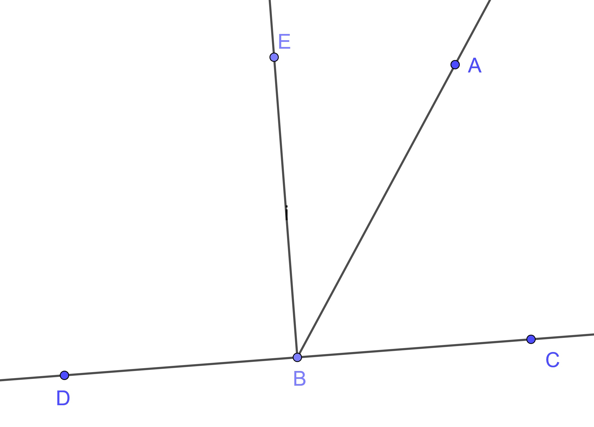
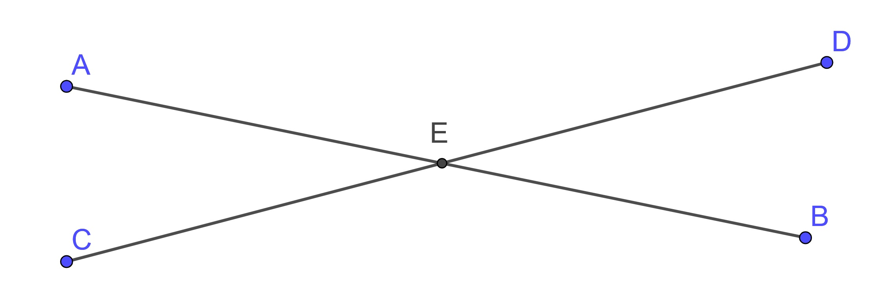
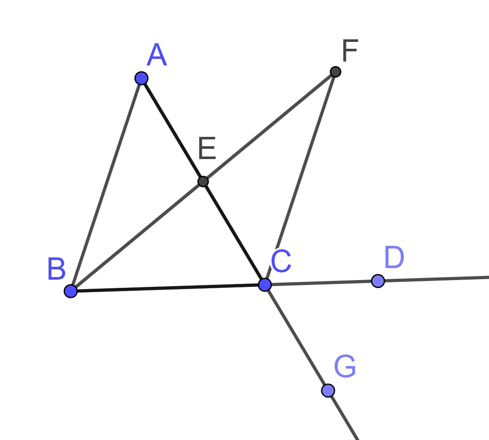
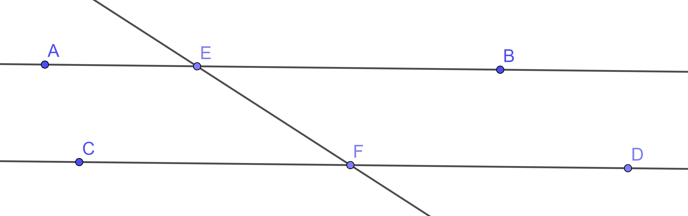
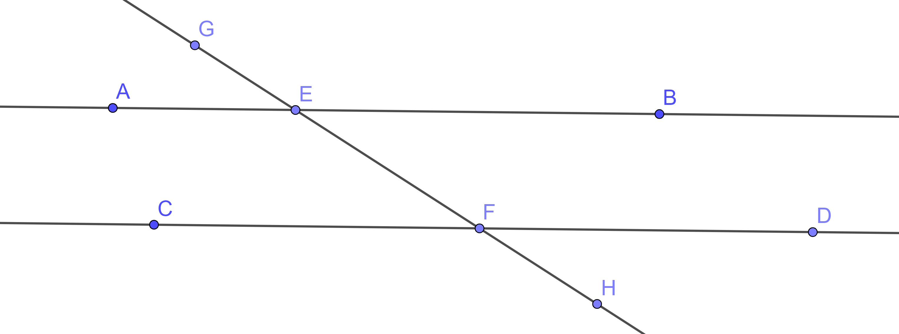
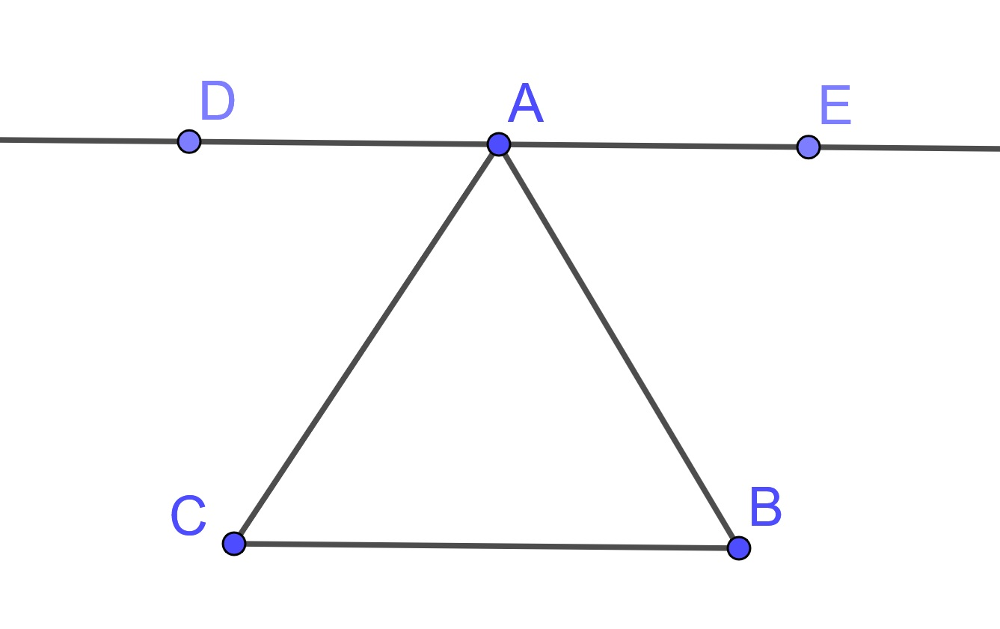
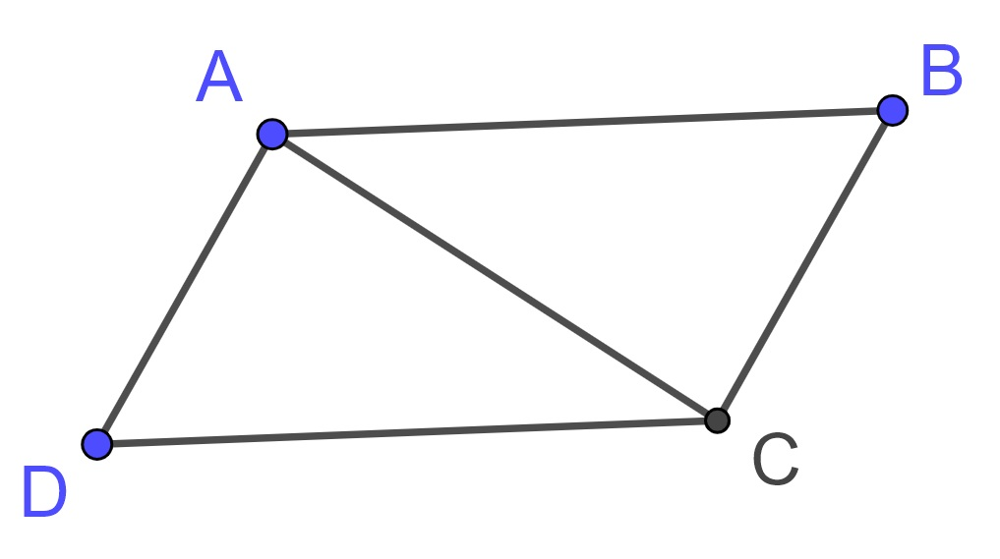
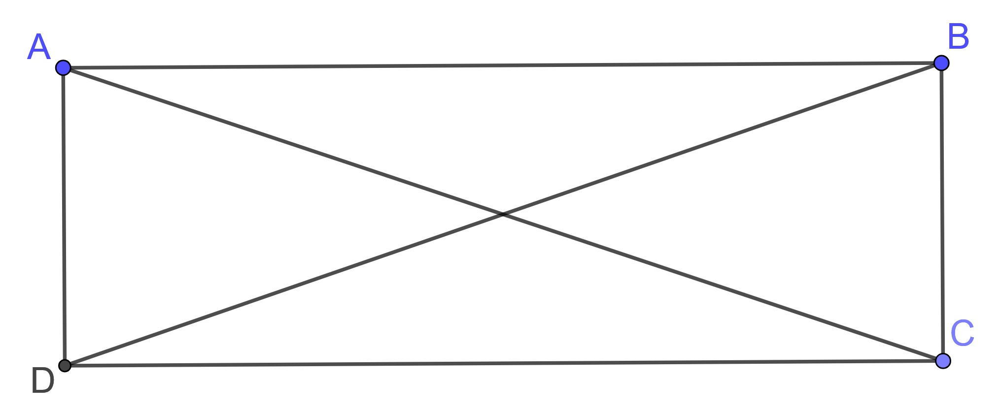

9.4 Angles, Parallel Lines, and Parallelograms
In this section we will review some of the properties of angles and parallel lines. Many of these properties are dependent upon congruent triangles so we will first list out these for use later.
Proposition 9.13 (Euclid's Proposition 4: SAS Triangle Congruence) If two triangles have the two sides equal to two sides respectively, and have the angles contained by the equal straight lines equal, they will also have the base equal to the base, the triangle will be equal to the triangle, and the remaining angles will be equal to the remaining angles respectively, namely those which the equal sides subtend.
Proposition 9.14 (Euclid's Proposition 8: SSS Triangle Congruence) If two triangles have the two sides equal to two sides respectively, and have also the base equal to the base, they will also have the angles equal which are contained by the equal straight lines.
Proposition 9.15 (Euclid's Proposition 26: ASA and AAS Triangle Congruence) If two triangles have two angles equal to two angles respectively, and one side equal to one side, namely, either the side adjoining the equal angles, or that opposite one of the equal angles, then the remaining sides equal the remaining sides and the remaining angle equals the remaining angle.
9.4.1 Angles and Parallel Lines
Related Content Standards
- (HSG.CO.9) Prove theorems about lines and angles. *Theorems include: vertical angles are congruent; when a transversal crosses parallel lines, alternate interior angles are congruent and corresponding angles are congruent; points on a perpendicular bisector
In the proofs of each of the following propositions we will only use propositions with a lower number, combined with Euclid’s Common Notions and Postulates.
Proposition 9.16 (Euclid's Proposition 13) If a straight line set up on a straight line make angles, it will make either two right angles or angles equal to two right angles.
Proof. Let any straight line \(AB\) standing on the straight line \(CD\) make the angles \(\angle CBA\) and \(\angle ABD\).
If the angle \(\angle CBA\) equals the angle \(\angle ABD\), then they are two right angles (Definition 10). If not, draw \(BE\) from the point \(B\) at right angles to \(CD\). Therefore the angles \(\angle CBE\) and \(\angle EBD\) are two right angles.

Since the angle \(\angle CBE\) equals the sum of the two angles \(\angle CBA\) and \(\angle ABE\), add the angle \(\angle EBD\) to each, therefore the sum of the angles \(\angle CBE\) and \(\angle EBD\) equals the sum of the three angles \(\angle CBA\), \(\angle ABE\), and \(\angle EBD\).
Using the common notions we can see that the sum of the angles \(\angle DBA\) and \(\angle ABC\) equals two right angles.
Therefore if a straight line stands on a straight line, then it makes either two right angles or angles whose sum equals two right angles.
Using this property along with the Common Notions one can also prove its converse.
Proposition 9.17 (Euclid's Proposition 14) If with any straight line, and at a point on it, two straight lines not lying on the same side make the adjacent angles equal to two right angles, two straight lines will be in a straight line with one another.
We are now able to prove that vertical angles are equal to one another.
Proposition 9.18 (Euclid's Proposition 15) If two straight lines cut one another, they make the vertical angles equal to one another.
Proof. Let the straight lines \(AB\) and \(CD\) cut one another at the point \(E\).

Since the straight line \(AE\) stands on the straight line \(CD\) making the angles \(\angle CEA\) and \(\angle AED\), therefore the sum of the angles \(\angle CEA\) and \(\angle AED\) equals two right angles.
Again, since the straight line \(DE\) stands on the straight line \(AB\) making the angles \(\angle AED\) and \(\angle DEB\), therefore the sum of the angles \(\angle AED\) and \(\angle DEB\) equals two right angles.
But the sum of the angles \(\angle CEA\) and \(\angle AED\) was also proved equal to two right angles, therefore the sum of the angles \(\angle CEA\) and \(\angle AED\) equals the sum of the angles \(\angle AED\) and \(\angle DEB\). Subtract the angle \(\angle AED\) from each. Then the remaining angle \(\angle CEA\) equals the remaining angle \(\angle DEB\).
Similarly it can be proved that the angles \(\angle BEC\) and \(\angle AED\) are also equal.
Now that we have proven that vertical angles are congruent, we will move to a study of angles related to parallel lines and transversals. But we first need to prove a property of interior and exterior angles of a triangle. A stronger result that the exterior angle is equal to the sum of the opposite interior angles is dependent upon the parallel postulate and so it is delayed by Euclid until later.
Proposition 9.19 (Euclid's Proposition 16) In any triangle, if one of the sides is produced, then the exterior angle is greater than either of the interior and opposite angles.
Proof. Let \(\triangle ABC\) be a triangle, and let one side of it \(BC\) be extended to a point \(D\).
Bisect \(AC\) at \(E\) and create a finite straight line \(BE\) and extend it to a point \(F\) such that \(EF\) is equal to \(BE\). Create the finite straight line \(FC\) and extend \(AC\) to a point \(G\).

Since \(AE\) equals \(EC\), and \(BE\) equals \(EF\), and the angle \(\angle AEB\) equals the angle \(\angle FEC\), since they are vertical angles, the triangle \(\triangle ABE\) equals the triangle \(\triangle CFE\), and the remaining angles equal the remaining angles respectively, namely those opposite the equal sides. Therefore the angle \(\angle BAE\) equals the angle \(\angle ECF\).
But the angle \(\angle ECD\) is greater than the angle \(\angle ECF\), therefore the angle \(\angle ACD\) is greater than the angle \(\angle BAE\).
Similarly, if \(BC\) is bisected, then the angle \(\angle BCG\), that is, the angle \(\angle ACD\), can also be proved to be greater than the angle \(\angle ABC\).
Therefore in any triangle, if one of the sides is extended, then the exterior angle is greater than either of the interior and opposite angles.
Proposition 9.20 (Euclid's Proposition 27) If a straight line falling on two straight lines makes the alternate angles equal to one another, then the straight lines are parallel to one another.
Proof. Let the straight line \(EF\) falling on the two straight lines \(AB\) and \(CD\) make the alternate angles \(\angle AEF\) and \(\angle EFD\) equal to one another.

If \(AB\) and \(CD\) are not parallel, then they meet at a point. We can assume without any loss of generality that they meet at a point in the direction of \(B\) and \(D\). We will label the point of intersection as \(G\).
Then, in the triangle \(\triangle GEF\), the exterior angle \(\angle AEF\) equals the interior and opposite angle \(\angle EFG\), which contradicts Proposition 9.19.
Therefore \(AB\) is parallel to \(CD\).
Proposition 9.21 (Euclid's Proposition 28) If a straight line falling on two straight lines makes the exterior angle equal to the interior and opposite angle on the same side, or the sum of the interior angles on the same side equal to two right angles, then the straight lines are parallel to one another.
Proof. Let \(EF\) be a straight line falling on the two straight lines \(AB\) and \(CD\) such that the exterior angle \(\angle GEA\) is equal to the interior angle \(\angle EFC\)

If we assume that \(AB\) is not parallel to \(CD\), then they intersect at a point \(J\). If \(J\) is in the direction of \(A\) and \(C\), then we would have the exterior angle \(\angle GEA\) being equal to the interior angle \(\angle EFC\), contradicting Proposition 9.19. If \(J\) is in the direction of \(B\) and \(D\), we can use the Common Notions and Proposition 9.16 to prove that angles \(\angle GEB\) and \(\angle EFD\) are equal to create an exterior angle equal to an interior angle, contradicting Proposition 9.19.
Therefore, \(AB\) is parallel to \(CD\).
If instead the sum of the interior angles on the same side are equal to two right angles Proposition 9.16 and the Common Notions will lead us to conclude that the exterior angle is equal to the interior and opposite angle on the same side. This would then imply that \(AB\) is parallel to \(CD\).
Proposition 9.22 is the converse of Propositions 9.20 and 9.21. It is also the first of Euclid’s propositions that makes use of the fifth postulate.
Proposition 9.22 (Euclid's Proposition 29) A straight line falling on parallel straight lines makes the alternate angles equal to one another, the exterior angle equal to the interior and opposite angle, and the sum of the interior angles on the same side equal to two right angles.
Proof. Let the straight line \(GH\) fall on the parallel straight lines \(AB\) and \(CD\).
If the angle \(\angle AEF\) does not equal the angle \(\angle EFD\), then one of them is greater. Let the angle \(\angle AEF\) be greater.
Add the angle \(\angle BEF\) to each. Therefore the sum of the angles \(\angle AEF\) and \(\angle BEF\) is greater than the sum of the angles \(\angle BEF\) and \(\angle EFD\).
But sum of the angles \(\angle AEF\) and \(\angle BEF\) equals two right angles. Therefore the sum of the angles \(\angle BEF\) and \(\angle EFD\) is less than two right angles.
Then by Postulate 5, the lines \(AB\) and \(CD\) are not parallel, contradicting the hypothesis.
Therefore, the angles \(\angle AEF\) and \(\angle EFD\) are equal and, by a similar set of arguments, the angles \(\angle BEF\) and \(\angle EFC\) are equal resulting in the alternate angles equal to one another.
Using Propositions 9.16 and 9.18 we find that the exterior angle equal to the interior and opposite angle, and the sum of the interior angles on the same side equal to two right angles.
One of the most used results of this is that sum of angles is equal to two right angles.
Theorem 9.1 The sum of angles of a triangle is equal to two right angles.
Proof. Let \(\triangle ABC\) be given with a line through \(A\) parallel to \(BC\).

From Proposition 9.16 and the Common Notions, we can conclude that sum of the angles \(\angle DAC\), \(\angle CAB\), and \(\angle BAE\) is equal to two right angles.
Since \(DE\) is parallel to \(BC\), we know that alternate internal angles are equal (Proposition 9.22) and so \(\angle ACB\) equals \(\angle DAC\) and \(\angle BAE\) equals \(\angle ABC\). So by the Common Notions, the interior angles are equal to two right angles.
9.4.2 Parallelograms
We will now use the theorems regarding parallel lines and the angles of a transverse to prove properties regarding parallelograms and other related quadrilaterals.
Related Content Standards
- (HSG.CO.11) Prove theorems about parallelograms. Theorems include: opposite sides are congruent, opposite angles are congruent, the diagonals of a parallelogram bisect each other, and conversely, rectangles are parallelograms with congruent diagonals.
Note that some of the definitions given below are not the same as those given by Euclid, but we will use these definitions for the remainder of the text.
Definition 9.2 A quadrilateral is a set of four points \(A, B, C, D\), of which no three are collinear, and four segments \(AB, BC, CD, DA\), of which none intersect at a point other than \(A,B,C,D\).
This eliminates the degenerate case for which the sides of the quadrilateral cross.
Definition 9.3 A parallelogram is a quadrilateral where the opposite sides are parallel.
Theorem 9.2 In a parallelogram, the opposite sides are of equal length.
Proof. Let \(ABCD\) be a parallelogram. Then \(AC\) is a transversal and by Proposition 9.22 we have that \(\angle DAC\) equals \(\angle BCA\) and \(\angle BAC\) equals \(\angle DCA\).

Since \(AC\) equals \(CA\), Proposition 9.15 implies that \(\triangle ABC\) is congruent to \(\triangle CDA\) and so \(AB\) equals \(CD\) and \(AD\) equals \(CB\), so the opposite sides are of equal length.
Theorem 9.3 If the opposite sides in a quadrilateral are the same length, then the figure is a parallelogram.
Proof. Let \(ABCD\) be a quadrilateral whose opposite sides are the same length. Then we have that \(AB\) equals \(CD\), \(AD\) equals \(CB\), and \(AC\) equals \(CA\).
So by Proposition 9.8 we have that \(\triangle ABC\) is congruent to \(\triangle CDA\). This implies that angles \(\angle DAC\) and \(\angle BCA\) are equal and angles \(\angle BAC\) and \(\angle DCA\) are equal. So by Proposition 9.20, the opposite sides of the quadrilateral are parallel.
Theorem 9.4 A quadrilateral is a parallelogram if and only if the diagonals bisect each other.
Proof. Let \(ABCD\) be a convex quadrilateral and let \(E\) be the intersection point of the two diagonals. If \(ABCD\) were not convex, then it could not be a parallelogram and the diagonals would not intersect. Since this theorem is an if and only if statement, it involves proving both implications.
Let us assume that \(ABCD\) is a parallelogram. Since \(AB\) is parallel to \(CD\), we know that the angles \(\angle EAB\) and \(\angle ECD\) are equal and the angles \(\angle EBA\) and \(\angle EDC\) are equal. Theorem 9.3 implies that \(AB\) is equal to \(DC\). So by Proposition 9.15 we know that \(\triangle ABE\) is congruent to \(\triangle DCE\). This means that \(AE\) and \(CE\) are equal and \(BE\) and \(DE\) are equal. So the diagonals bisect each other.
Let us assume that the diagonals bisect each other. We know that vertical angles are equal by Proposition 9.18. Combining this with \(AE\) equaling \(CE\) and \(BE\) equaling \(DE\) we use Proposition 9.15 to see that \(\triangle ABE\) is congruent to \(\triangle CDE\) and \(\triangle ADE\) is congruent to \(\triangle CBE\). This means that the opposite sides of the quadrilateral are equal and so, by our previous theorem, the quadrilateral is a parallelogram.
We will now see how parallelograms and rectangles are related. But first we need to choose a definition for a rectangle.
Definition 9.4 A rectangle is a quadrilateral where all four angles are the same size.
Notice that we have not defined the rectangle to have angles that are right angles, following the preferential criteria for definitions of minimality and elegance. We will show in the next theorem that the four angles of the same size in a quadrilateral implies that all of the angles are right angles.
Theorem 9.5 A rectangle has four right angles.
Proof. Let \(ABCD\) be a rectangle. Since all of the angles are the same size, the quadrilateral must be convex. Otherwise, one of the angles would be larger than a right angle and the others less than a right angle. If we let \(AC\) be a diagonal, we see have triangles \(\triangle ABC\) and \(\triangle ADC\). The sum of the angles of these triangle are each equal to two right angles by Theorem 9.1. Using the Common Notions, we see that the sum of the angles of the two triangles is equal to the sum of the angles of the quadrilateral. This means that the sum of the angles of the convex quadrilateral must equal four right angles. Since the four angles of the rectangle are equal, each must be a right angle.
Theorem 9.6 A rectangle is a parallelogram.
Proof. Let \(ABCD\) be a rectangle. We can extend each of the sides of the quadrilateral to infinite lines and see that each of the intersections of lines form right angles. So all of the opposite interior angles are right angles and are therefore equal. Therefore, the opposite sides of the rectangle are parallel and so the rectangle is a parallelogram.
Theorem 9.7 A parallelogram is a rectangle if and only if one of the angles is a right angles.
Proof. The proof will be left as an exercise.
Theorem 9.8 A parallelogram is a rectangle if and only if the diagonals are the same length.
Proof. Let \(ABCD\) be a parallelogram with diagonals \(AC\) and \(BD\). Since \(ABCD\) is a parallelogram, the opposite sides \(AD\) and \(BC\) are equal.

Since \(CD\) equals \(DC\), we know that \(\triangle ACD\) is congruent to \(\triangle BDC\) if and only if the angles \(\angle ADC\) and \(\angle BCD\) are equal by Proposition 9.4. We also know that \(\triangle ACD\) is congruent to \(\triangle BDC\) if and only if the sides \(AC\) and \(BD\) are equal. Therefore, the sides \(AC\) and \(BD\) are equal if and only if the angles \(\angle ADC\) and \(\angle BCD\) are equal.
Since the angles are interior angles, their sum is equal to two right angles. So the diagonals are equal if and only if the angles \(\angle ADC\) and \(\angle BCD\) are right angles. By Theorem 9.7 we see that the diagonals are equal if and only if the parallelogram is a rectangle.
Another quadrilateral of interest when discussing parallelograms are rhombi.
Definition 9.5 A rhombus is a quadrilateral where all four sides have the same length.
Theorem 9.9 A rhombus is a parallelogram.
Proof. This follows directly from Theorem 9.3.
Theorem 9.10 A quadrilateral is a rhombus if and only if the diagonals are perpendicular bisectors of each other.
Proof. The proof will be left as an exercise.
9.4.3 Exercises
Write out the details of the proof of Proposition 9.17.
For each of the propositions, use a dynamic geometry app (e.g. GeoGebra or Desmos) to sketch the diagrams and follow the arguments.
Prove Theorem 9.7.
Prove the following Theorem.
Theorem 9.11 If one pair of opposite sides in a four sided figure are both opposite and parallel, then the figure is a parallelogram.
Prove Theorem 9.10.
Prove the following Theorem.
Theorem 9.12 A quadrilateral is a rhombus if and only if the diagonals bisect all the vertex angles.
- Prove the following Theorem.
Theorem 9.13 If one of the diagonals in a parallelogram bisects one of the vertex angles, then the parallelogram is a rhombus.